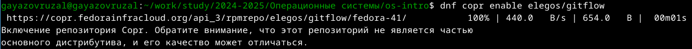
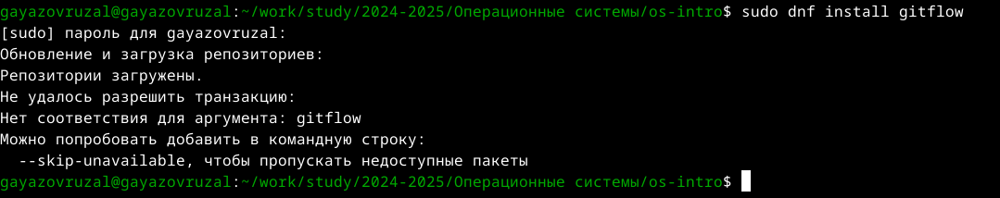
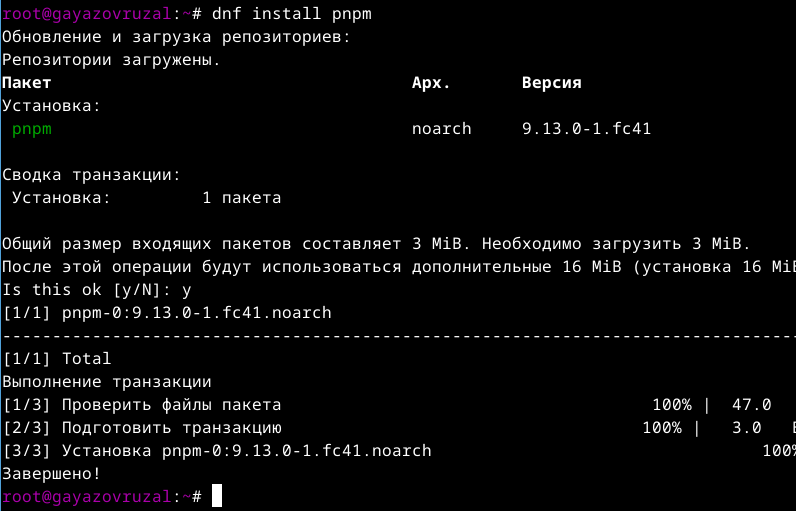
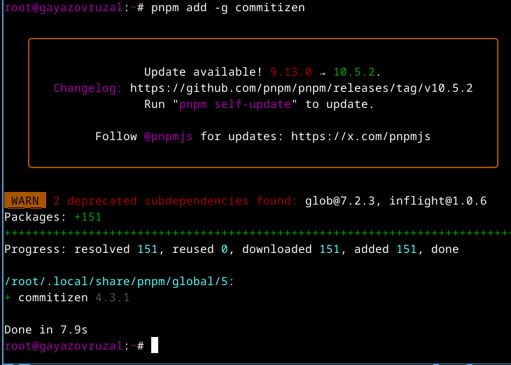
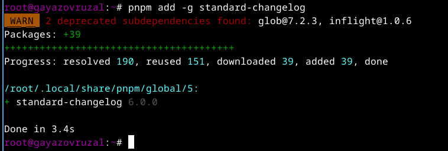
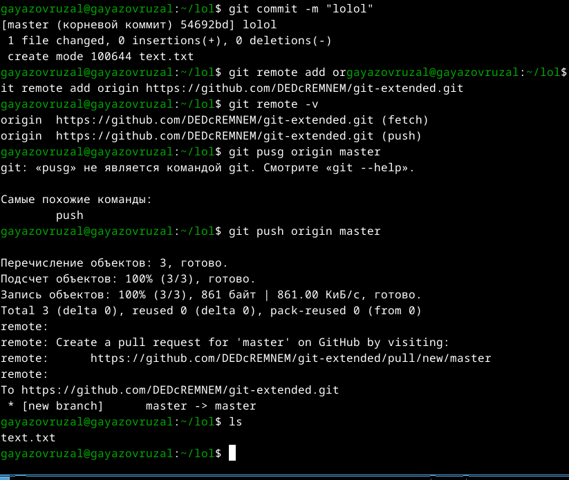
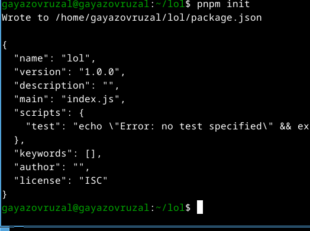
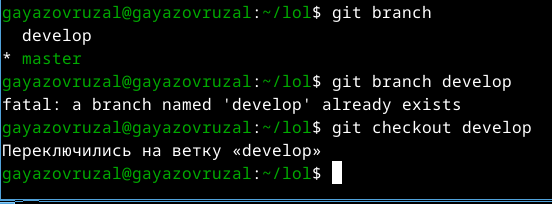

Цель работы
Получение навыков правильной работы с репозиториями git.
Задание
- Установка git-flow
- Установка Node.js
- Настройка Node.js
- Общепринятые коммиты
- Создание репозитория git
- Работа с репозиторием git
Установка программного
обеспечения
Устанавливаю git-flow (рис. @fig:001).

Устанавливаю git-flow
Установка программного
обеспечения
Устанавливаю node.js (рис. @fig:002).

Устанавливаю node.js
Установка программного
обеспечения
Настраиваю node.js (рис. @fig:003).

Настраиваю node.js
Установка программного
обеспечения
Запускаю pnpm и пишу source ~/.bashrc (рис. @fig:004).
 Запускаю pnpm
Запускаю pnpm
Установка программного
обеспечения
Использую программу для помощи в форматировании коммитов. (рис. @fig:005).
Установка программного
обеспечения

Использую программу для помощи в
форматировании коммитов
Установка программного
обеспечения
Использую программу для помощи в создании логов. (рис. @fig:006).

Использую программу для помощи в создании
логов.
Практический сценарий
использования git
Создаю новый репозиторий на git. Делаю первый коммит и выкладываю на
git (рис. @fig:007).

Делаю первый коммит и выкладываю на
git
Практический сценарий
использования git
Конфигурирую общепринятые коммиты (рис. @fig:008).

Конфигурирую общепринятые
коммиты
Практический сценарий
использования git
Отправляю все на git (рис. @fig:009).
 Отправляю все на git
Отправляю все на git
Практический сценарий
использования git
Перехожу на ветку develop (рис. @fig:010).

Перехожу на ветку develop
Практический сценарий
использования git
Загружаю весь репозиторий в хранилище и устанавливаю внешнюю ветку
как выше стоящую (рис. @fig:011).
 Загружаю весь репозиторий в хранилище и
устанавливаю внешнюю ветку как выше стоящую
Загружаю весь репозиторий в хранилище и
устанавливаю внешнюю ветку как выше стоящую
Практический сценарий
использования git
Моя ошибка git-flow (рис. @fig:012).
 Незнаю решение
Незнаю решение
Выводы
При выполнении лабораторной работы я полученил навыков правильной
работы с репозиториями git.
Список литературы
- Лабораторная работа № 4 [Электронный ресурс] URL:
https://esystem.rudn.ru/mod/page/view.php?id=970819